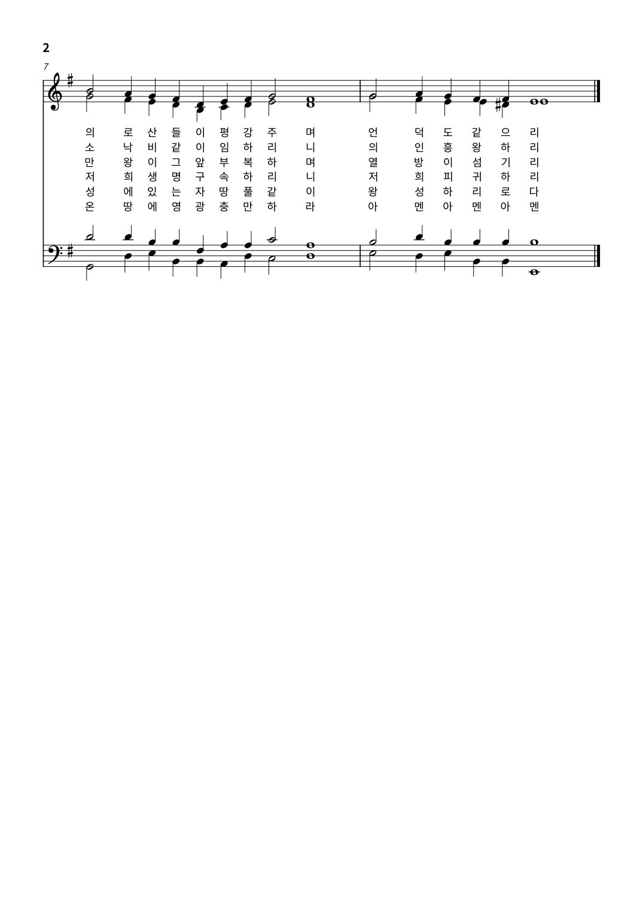

시편 72편
TES JUGEMENS, DIEU VERITABLE [GENEVAN 72] · 9 6. 9 6. 9 6. 9 6.
곡조: Genevan Psalter, 1543 · 화성: Claude Goudimel, 1564 · 가사: 개역한글판 시편 72편 편역(AI 초벌 편역판 · 신학 감수 전) · 6절
악보 PDF MusicXML(출력용) MusicXML(반주용, 전주·반복 포함) 개역한글 시편 72편 읽기
악보


가사
1절 (시편 1-3)
하나님이여 판단력을
왕에게 주소서
주의 의로움 왕자에게
내려 주옵소서
백성과 빈자 판단하되
의로써 하리라
의로 산들이 평강 주며
언덕도 같으리
하나님이여 판단력을
왕에게 주소서
주의 의로움 왕자에게
내려 주옵소서
백성과 빈자 판단하되
의로써 하리라
의로 산들이 평강 주며
언덕도 같으리
2절 (시편 4-7)
저가 빈민을 신원하고
궁핍자 구하며
압제자들을 꺾으리라
해 달이 있도록
대대로 주를 경외하리
벤 풀에 비 같고
소낙비 같이 임하리니
의인 흥왕하리
저가 빈민을 신원하고
궁핍자 구하며
압제자들을 꺾으리라
해 달이 있도록
대대로 주를 경외하리
벤 풀에 비 같고
소낙비 같이 임하리니
의인 흥왕하리
3절 (시편 8-11)
바다서 바다 강서 땅 끝
저가 다스리리
광야 백성이 굽히오며
원수 티끌 핥고
다시스 섬 왕 조공하며
스바 예물 드려
만왕이 그 앞 부복하며
열방이 섬기리
바다서 바다 강서 땅 끝
저가 다스리리
광야 백성이 굽히오며
원수 티끌 핥고
다시스 섬 왕 조공하며
스바 예물 드려
만왕이 그 앞 부복하며
열방이 섬기리
4절 (시편 12-14)
궁핍한 자가 외칠 때에
저가 건지시며
도움 없는 자 건지오며
긍휼히 여기며
궁핍한 자를 구원하고
압박 강포에서
저희 생명 구속하리니
저희 피 귀하리
궁핍한 자가 외칠 때에
저가 건지시며
도움 없는 자 건지오며
긍휼히 여기며
궁핍한 자를 구원하고
압박 강포에서
저희 생명 구속하리니
저희 피 귀하리
5절 (시편 15-16)
저희가 살아 스바 금을
저에게 드리며
사람들 항상 기도하고
종일 찬송하리
산 위에 화곡이 풍성코
열매 흔들리며
성에 있는 자 땅 풀 같이
왕성하리로다
저희가 살아 스바 금을
저에게 드리며
사람들 항상 기도하고
종일 찬송하리
산 위에 화곡이 풍성코
열매 흔들리며
성에 있는 자 땅 풀 같이
왕성하리로다
6절 (시편 17-19. 20절은 표제 성격이라 뺐다)
그 이름이여 해와 같이
장구하리로다
사람 복 받고 열방이 다
복되다 하리라
기사 행하신 주 찬송코
이름 찬송하라
온 땅에 영광 충만하라
아멘 아멘 아멘
그 이름이여 해와 같이
장구하리로다
사람 복 받고 열방이 다
복되다 하리라
기사 행하신 주 찬송코
이름 찬송하라
온 땅에 영광 충만하라
아멘 아멘 아멘